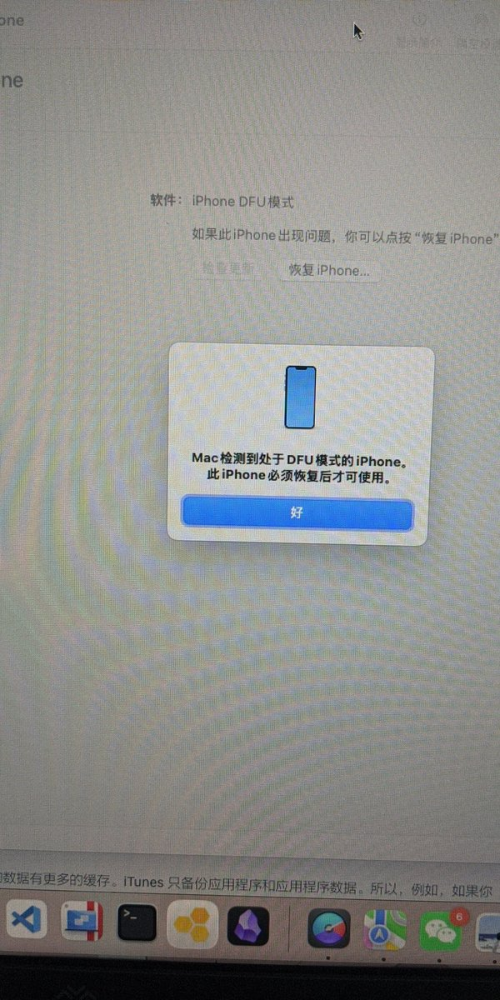
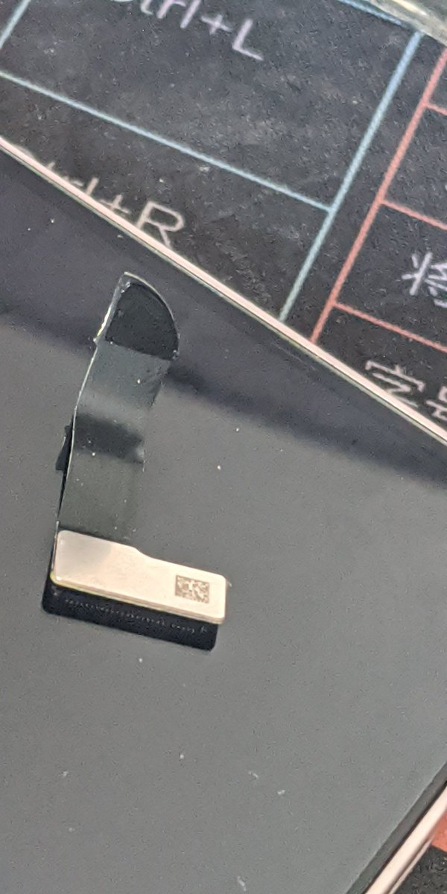

lovely水
@lovelyshuimao
@MoonLF_SY 摔自己手机吗😨
太亏了


明月似盈
@MoonLF_SY
好无助的感觉...无助愤怒不甘，一气之下把我的手机摔坏了，
家人也一直不理解我不支持我，学校里面还一直上压力
屏幕排线断了 主板也坏了
再也不想上学了，看见这个13 mini就想起我失败的一生...，好失败只会摔东西来发泄
看不见有什么未来。。 https://t.co/3XDHOHWEh6